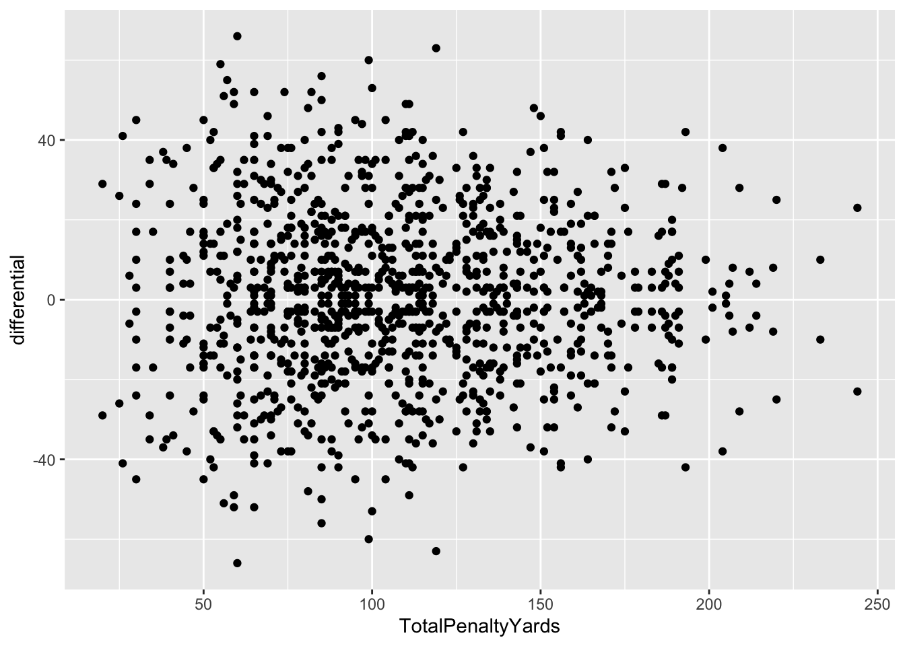

Chapter 9 Correlations and regression
Throughout sports, you will find no shortage of opinions. From people yelling at their TV screens to an entire industry of people paid to have opinions, there are no shortage of reasons why this team sucks and that player is great. They may have their reasons, but a better question is, does that reason really matter?
Can we put some numbers behind that? Can we prove it or not?
This is what we’re going to start to answer. And we’ll do it with correlations and regressions.
First, we need data from the 2020 college football season.
For this walkthrough:
Then load the tidyverse.
library(tidyverse)Now import the data.
correlations <- read_csv("data/footballlogs20.csv")## Rows: 1100 Columns: 54## ── Column specification ────────────────────────────────────────────────────────
## Delimiter: ","
## chr (8): HomeAway, Opponent, Result, TeamFull, TeamURL, Outcome, Team, Con...
## dbl (45): Game, PassingCmp, PassingAtt, PassingPct, PassingYds, PassingTD, ...
## date (1): Date##
## ℹ Use `spec()` to retrieve the full column specification for this data.
## ℹ Specify the column types or set `show_col_types = FALSE` to quiet this message.To do this, we need all FBS college football teams and their season stats from last year. How much, over the course of a season, does a thing matter? That’s the question you’re going to answer.
In our case, we want to know how much does a team’s accumulated penalties influence the number of points they score in a season? How much difference can we explain in points with penalties?
We’re going to use two different methods here and they’re closely related. Correlations – specifically the Pearson Correlation Coefficient – is a measure of how related two numbers are in a linear fashion. In other words – if our X value goes up one, what happens to Y? If it also goes up 1, that’s a perfect correlation. X goes up 1, Y goes up 1. Every time. Correlation coefficients are a number between 0 and 1, with zero being no correlation and 1 being perfect correlation if our data is linear. We’ll soon go over scatterplots to visually determine if our data is linear, but for now, we have a hypothesis: More penalties are bad. Penalties hurt. So if a team gets lots of them, they should have worse outcomes than teams that get few of them. That is an argument for a linear relationship between them.
But is there one?
We’re going create a new dataframe called newcorrelations that takes our data that we imported and adds a column called differential because we don’t have separate offense and defense penalties, and then we’ll use correlations to see how related those two things are.
newcorrelations <- correlations %>%
mutate(
differential = TeamScore - OpponentScore,
TotalPenalties = Penalties+DefPenalties,
TotalPenaltyYards = PenaltyYds+DefPenaltyYds
)In R, there is a cor function, and it works much the same as mean or median. So we want to see if differential is correlated with TotalPenaltyYards, which is the yards of penalties a team gets in a game. We do that by referencing differential and TotalPenaltyYards and specifying we want a pearson correlation. The number we get back is the correlation coefficient.
newcorrelations %>% summarise(correlation = cor(differential, TotalPenaltyYards, method="pearson"))## # A tibble: 1 × 1
## correlation
## <dbl>
## 1 -0.00677So on a scale of -1 to 1, where 0 means there’s no relationship at all and 1 or -1 means a perfect relationship, penalty yards and whether or not the team scores more points than it give up are at -0.0068. You could say they’re .7 percent related toward the negative – more penalties, the lower your differential. Another way to say it? They’re 99.3 percent not related.
What about the number of penalties instead of the yards?
newcorrelations %>%
summarise(correlation = cor(differential, TotalPenalties, method="pearson"))## # A tibble: 1 × 1
## correlation
## <dbl>
## 1 0.000296So wait, what does this all mean?
It means that when you look at every game in college football, the number of penalties and penalty yards does have a negative impact on the score difference between your team and the other team. But the relationship between penalties, penalty yards and the difference between scores is barely anything at all. Like 99+ percent plus not related.
Normally, at this point, you’d quit while you were ahead. A correlation coefficient that shows there’s no relationship between two things means stop. It’s pointless to go on. But let’s beat a dead horse a bit for the sake of talk radio callers who want to complain about undisciplined football teams.
Enter regression. Regression is how we try to fit our data into a line that explains the relationship the best. Regressions will help us predict things as well – if we have a team that has so many penalties, what kind of point differential could we expect? So regressions are about prediction, correlations are about description. Correlations describe a relationship. Regressions help us predict what that relationship means and what it might look like in the real world. Specifically, it tells us how much of the change in a dependent variable can be explained by the independent variable.
Another thing regressions do is give us some other tools to evaluate if the relationship is real or not.
Here’s an example of using linear modeling to look at penalty yards. Think of the ~ character as saying “is predicted by.” The output looks like a lot, but what we need is a small part of it.
fit <- lm(differential ~ TotalPenaltyYards, data = newcorrelations)
summary(fit)##
## Call:
## lm(formula = differential ~ TotalPenaltyYards, data = newcorrelations)
##
## Residuals:
## Min 1Q Median 3Q Max
## -67.007 -14.699 0.265 14.047 64.993
##
## Coefficients:
## Estimate Std. Error t value Pr(>|t|)
## (Intercept) 1.21614 1.79282 0.678 0.498
## TotalPenaltyYards -0.00349 0.01556 -0.224 0.823
##
## Residual standard error: 21.36 on 1098 degrees of freedom
## Multiple R-squared: 4.58e-05, Adjusted R-squared: -0.0008649
## F-statistic: 0.05029 on 1 and 1098 DF, p-value: 0.8226There’s three things we need here:
- First we want to look at the p-value. It’s at the bottom right corner of the output. In the case of Total Penalty Yards, the p-value is .8226. The threshold we’re looking for here is .05. If it’s less than .05, then the relationship is considered to be statistically significant. Significance here does not mean it’s a big deal. It means it’s not random. That’s it. Just that. Not random. So in our case, the relationship between total penalty yards and a team’s aggregate point differential are not statistically significant. The differences in score difference and penalty yards could be completely random. This is another sign we should just stop with this.
- Second, we look at the Adjusted R-squared value. It’s right above the p-value. Adjusted R-squared is a measure of how much of the difference between teams aggregate point values can be explained by penalty yards. Our correlation coefficient said they’re .7 percent related to each other, but penalty yard’s ability to explain the difference between teams? About .08 percent. That’s … not much. It’s really nothing. Again, we should quit.
- The third thing we can look at, and we only bother if the first two are meaningful, is the coefficients. In the middle, you can see the (Intercept) is 1.21614 and the TotalPenaltyYards coefficient is -0.00349. Remember high school algebra? Remember learning the equation of a line? Remember swearing that learning
y=mx+bis stupid because you’ll never need it again? Surprise. It’s useful again. In this case, we could try to predict a team’s score differential in a game – will they score more than they give up – by usingy=mx+b. In this case, y is the aggregate score, m is -0.00349 and b is 1.21614. So we would multiply a teams total penalty yards by -0.00349 and then add 1.21614 to it. The result would tell you what the total aggregate score in the game would be, according to our model. Chance that your even close with this? About .08 percent. In other words, you’ve got a 99.92 percent chance of being completely wrong. Did I say we should quit? Yeah.
So penalty yards are totally meaningless to the outcome of a game.
You can see the problem in a graph. On the X axis is penalty yards, on the y is aggregate score. If these elements had a strong relationship, we’d see a clear pattern moving from right to left, sloping down. On the left would be the teams with few penalties and a positive point differential. On right would be teams with high penalty yards and negative point differentials. Do you see that below?

9.1 A more predictive example
So we’ve firmly established that penalties aren’t predictive. But what is?
So instead of looking at penalty yards, let’s make a new metric: Net Yards. Can we predict the score differential by looking at the yards a team gained minus the yards they gave up.
regressions <- newcorrelations %>% mutate(NetYards = OffensiveYards - DefYards)First, let’s look at the correlation coefficent.
regressions %>%
summarise(correlation = cor(differential, NetYards, method="pearson"))## # A tibble: 1 × 1
## correlation
## <dbl>
## 1 0.801Answer: 80 percent. Not a perfect relationship, but very good. But how meaningful is that relationship and how predictive is it?
net <- lm(differential ~ NetYards, data = regressions)
summary(net)##
## Call:
## lm(formula = differential ~ NetYards, data = regressions)
##
## Residuals:
## Min 1Q Median 3Q Max
## -49.479 -8.593 0.128 8.551 48.857
##
## Coefficients:
## Estimate Std. Error t value Pr(>|t|)
## (Intercept) 0.311030 0.385651 0.807 0.42
## NetYards 0.101704 0.002293 44.345 <2e-16 ***
## ---
## Signif. codes: 0 '***' 0.001 '**' 0.01 '*' 0.05 '.' 0.1 ' ' 1
##
## Residual standard error: 12.78 on 1098 degrees of freedom
## Multiple R-squared: 0.6417, Adjusted R-squared: 0.6414
## F-statistic: 1967 on 1 and 1098 DF, p-value: < 2.2e-16First we check p-value. See that e-16? That means scientific notation. That means our number is 2.2 times 10 to the -16 power. So -.000000000000000022. That’s sixteen zeros between the decimal and 22. Is that less than .05? Uh, yeah. So this is really, really, really not random. But anyone who has watched a game of football knows this is true. It makes intuitive sense.
Second, Adjusted R-squared: 0.6414. So we can predict a whopping 64 percent of the difference in the score differential by simply looking at the net yards the team has.
Third, the coefficients: In this case, our y=mx+b formula looks like y = 0.101704x + 0.311030. So if we were applying this, let’s look at Nebraska’s 26-20 loss to Iowa in 2020. Nebraska’s net yards that game? 16. That’s right – we outgained them.
(0.101704*16)+0.311030 ## [1] 1.938294So by our model, Nebraska should have won by 1.94 points. Some games are closer than others. But when you can explain 65 percent of the difference, this is the kind of result you get. What would improve the model? Using more data to start. And using more inputs.